Dari titik ukur sampai laporan PDF: waterpas, poligon, koordinat UTM, model 3D, penampang, dan gambar CAD dalam satu aplikasi.
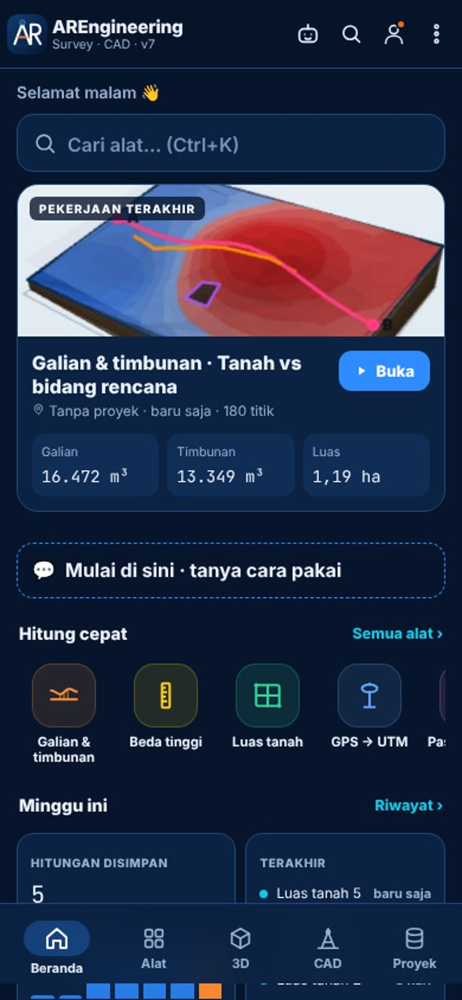
Tempel koordinat, impor CSV/LandXML, atau foto tabelnya. Model tanah terbentuk dalam hitungan detik.
Warna elevasi dan kontur, bisa diputar dan diperbesar dengan jari.
Volume eksak metode komposit TIN, setara Civil 3D, dicek ulang dengan metode grid.
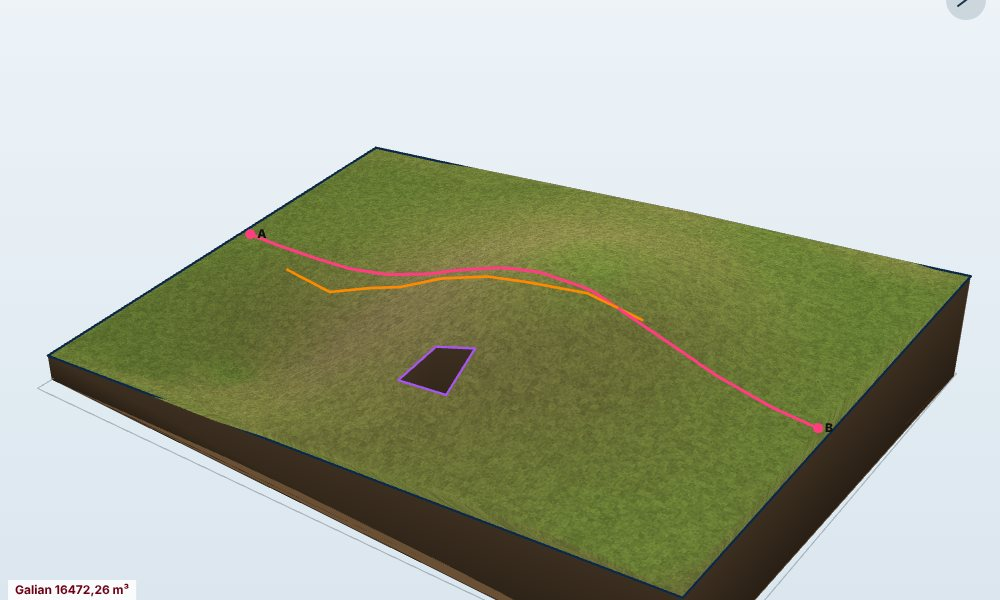
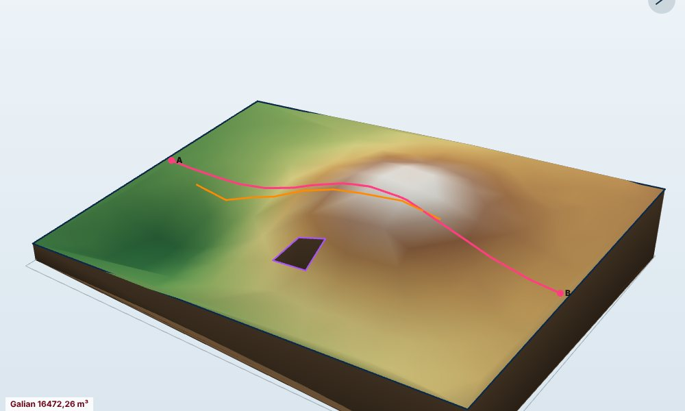
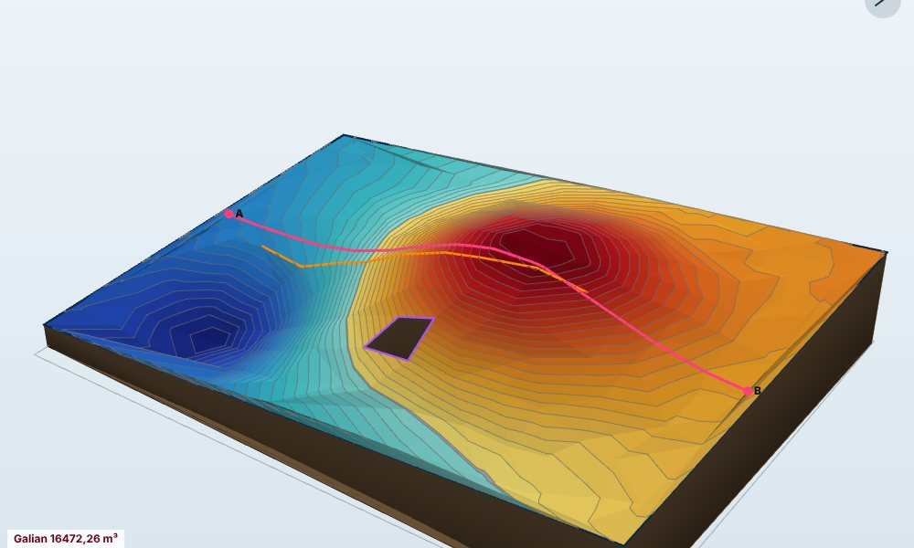
MODEL 3DTanah asli, garis rencana, kelandaian, dan tinggi galian per STA, lengkap dengan tabel di bawah gambar.
Badan jalan, saluran, luas galian (Ag) dan timbunan (At) per STA. Volume dihitung otomatis, ekspor ke PDF skala asli atau DXF.
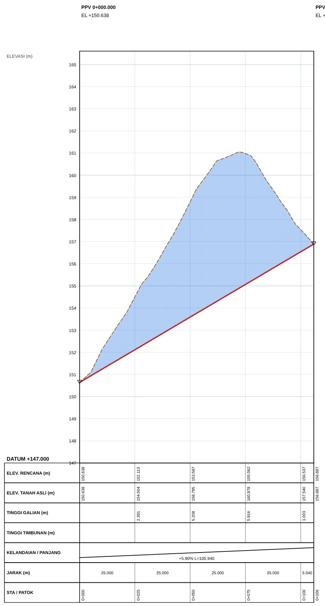
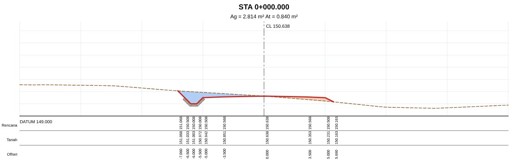
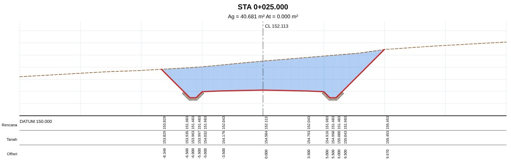
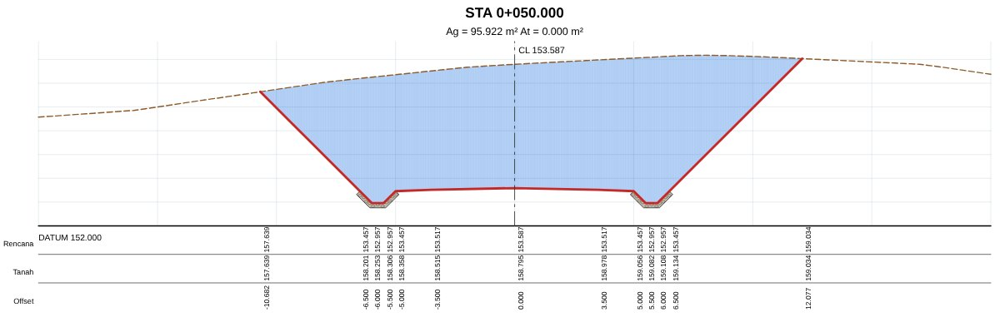
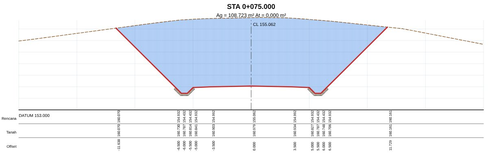
Tombol besar, angka jelas, dan mode terang yang tetap terbaca di bawah matahari.
Foto daftar koordinat atau buku ukur. Aplikasi membaca angkanya, lalu menandai sel yang ragu supaya kamu periksa dulu sebelum dihitung.
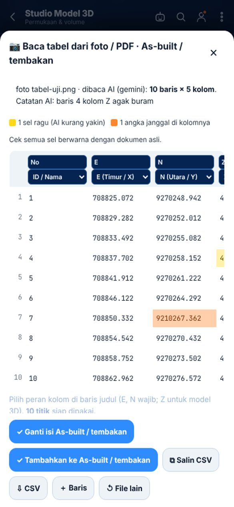
Buka DXF, KML, dan PDF peta. Galian dan timbunan tampil bertingkat per 10 cm, tiap tingkat satu layer yang bisa dinyalakan atau dimatikan.
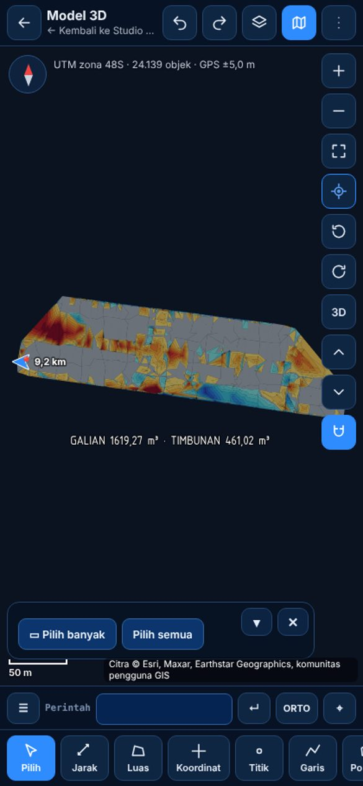
Isi bacaan seperti di buku ukur. Salah tutup, toleransi, dan koreksi dihitung otomatis, lengkap dengan kelas ketelitian.
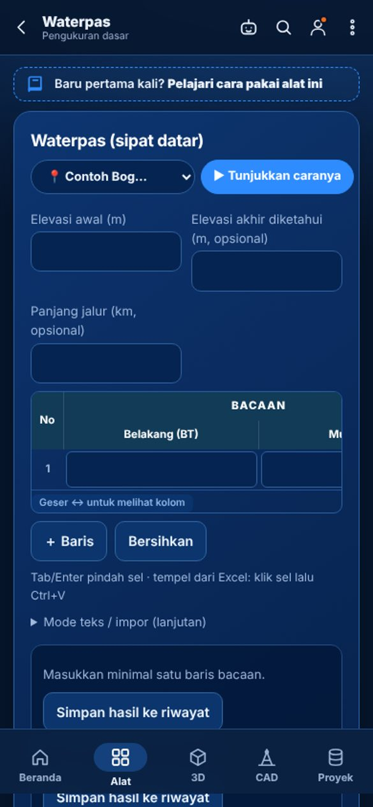
Unduh gratis. Fitur Profesional bisa dicoba 7 hari.